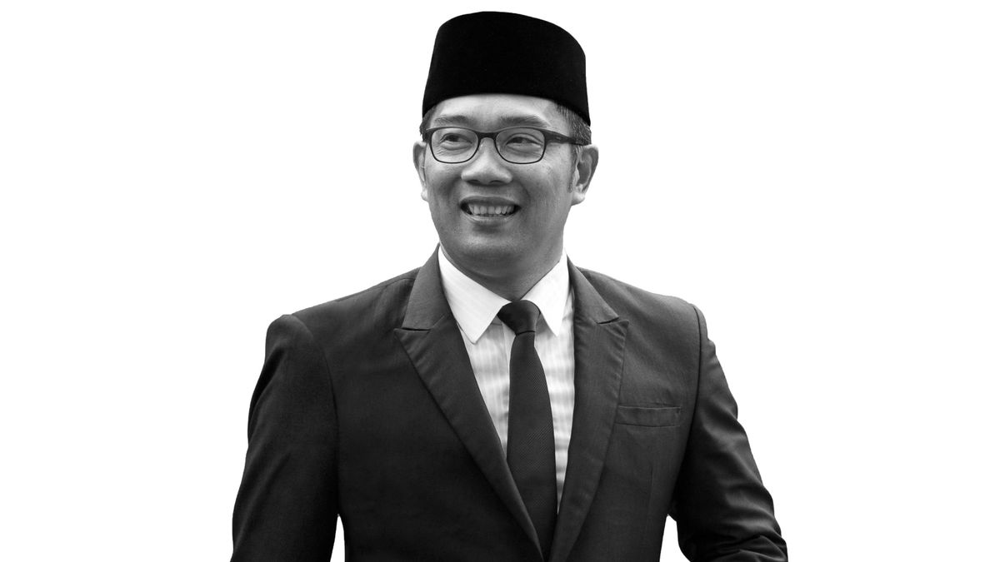

Mochammad Ridwan Kamil

"Do your creativity to change your society."
Mochammad Ridwan Kamil is an Indonesian architect and politician who has served as Governor of West Java since September 5, 2018.
Timeline of Ridwan Kamil's life events:
- 1971 - born in Bangun, Indonesia
- 1995 - Bachelor of Architecture in Bandung Institute of Technology, Bandung, Indonesia
- 1996 - Married with Atalia Praratya Kamil at the age of 25
- 2001 - Master of Urban Design University of California, Berkeley, AS
- 2005 - Found Urbane Indonesia, architecture and interior designer company based in Bandung, Indonesia.
- 2007 - Urbane often participates in competitions in the field of architectural design at the national level such as 1st place in the Tsunami Museum design competition in Nangro Aceh Darrussalam, 1st place in the 1st campus design competition at Tarumanegara University
- 2008 - Urbane has been awarded many awards from international media such as the BCI Asia Awards three years in a row
- 2008 - Urbane also won 1st place in the design competition of the Faculty of Cultural Sciences at the University of Indonesia, winner 1st design competition for Sanggar Nagari in Kota Baru Parahyangan in West Bandung Regency and 1st place in the design competition for the Art Center and Art School at the University of Indonesia.
- 2013 - Ridwan Kamil elected as Mayor of Bandung City, Indonesia
- 2018 - Ridwan Kamil continue his political journey becoming Governor of West Java province, Indonesia